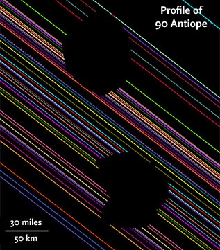
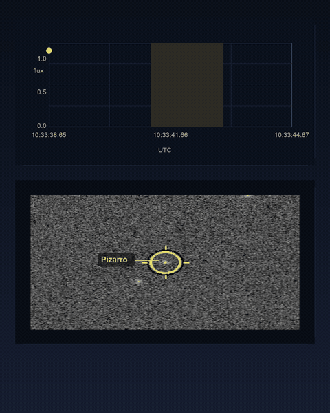
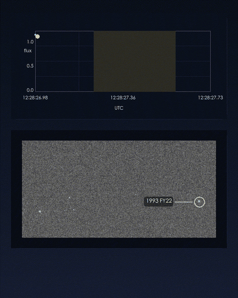
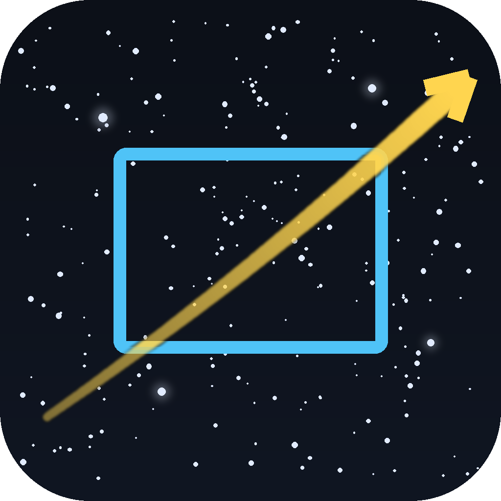

Reference: Herald et al. (2020), MNRAS ↗
Size and shape
Each observing site measures one chord across the asteroid. Chords from several sites can constrain its size and projected shape.
03 Stellar occultations
I observe asteroid occultations using high-cadence imaging and UTC-referenced timing. A measured drop in stellar flux provides the event timing and duration at one observing site.
Measurement principle
The star is sufficiently distant that its light reaches the asteroid as parallel rays. The asteroid blocks those rays and projects its silhouette towards Earth. The diagram is not to scale.
Scientific significance

Each observing site measures one chord across the asteroid. Chords from several sites can constrain its size and projected shape.
Accurate event times give a precise sky position for the asteroid and can improve its predicted orbit.
Additional short flux changes can indicate satellites, rings or other material around the main body.
Research result
A stellar occultation observation has revealed a previously unreported close double-star candidate.
UCAC4 385-067829
During the 14 June 2026 occultation by (80623) 2000 AE184, I recorded a four-frame, flat-bottomed flux drop of about 32%, rather than the expected full disappearance. The most likely interpretation is that the asteroid occulted the fainter component while the brighter component remained visible.
The preliminary solution gives component magnitudes of 13.2 and 14.0, a separation greater than 0.3 mas, and a position angle of 19.5°. The double-star interpretation is currently assessed as a strong candidate rather than a confirmed result.
Examples


Collaboration
Occultation measurements are most useful when observations from several sites are combined. Positive chords and well-documented misses are submitted to regional and international networks.
Regional predictions, observing guidance, reports, results and meetings for Australia, New Zealand and the South Pacific.
Visit TTOA ↗ IOTAInternational observing resources, reporting guidance, archived data, publications and coordinated campaigns.
Visit IOTA ↗
Open-source software
SatOccult searches for satellite–star approaches, calculates closest approach and geometric contact times, and provides sky-chart and tangent-plane views for planning. A catalogue match still requires field verification, a count-rate test and a checked timing system before observation.
SatOccult is an independently maintained derivative of SatIdentifier, originally created by Zhuoxiao. It is not an official upstream release.